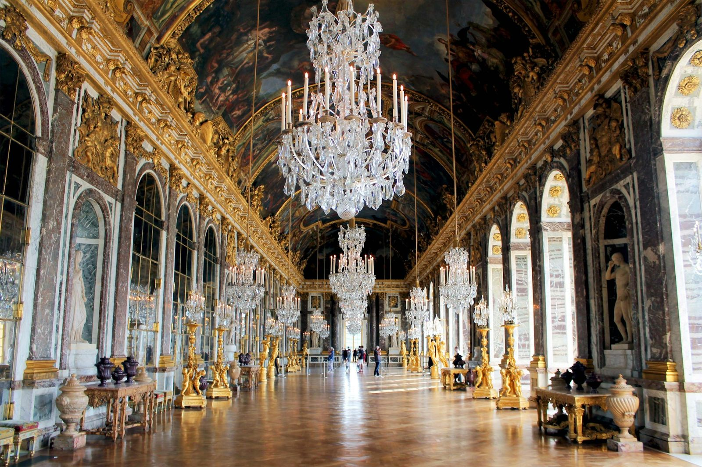

Entry 01
The Hall of Mirrors
Seventeen arched windows look out over the gardens; facing them, seventeen arcades are lined with 357 mirrors (21 per arcade). Built by Jules Hardouin-Mansart from 1678 to 1684, with a painted ceiling by Charles Le Brun, it was a showcase for the royal mirror manufactory Colbert had founded in 1665 to break Venice's grip on mirror-making. Not all of it is original: during the 2004–2007 restoration, the restorer in charge of the mirrors estimated that about 70% of them dated from the hall's opening in the 17th century, and 48 damaged mirrors were replaced with mirrors from the same period. The Treaty of Versailles was signed here on 28 June 1919.